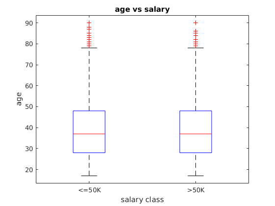
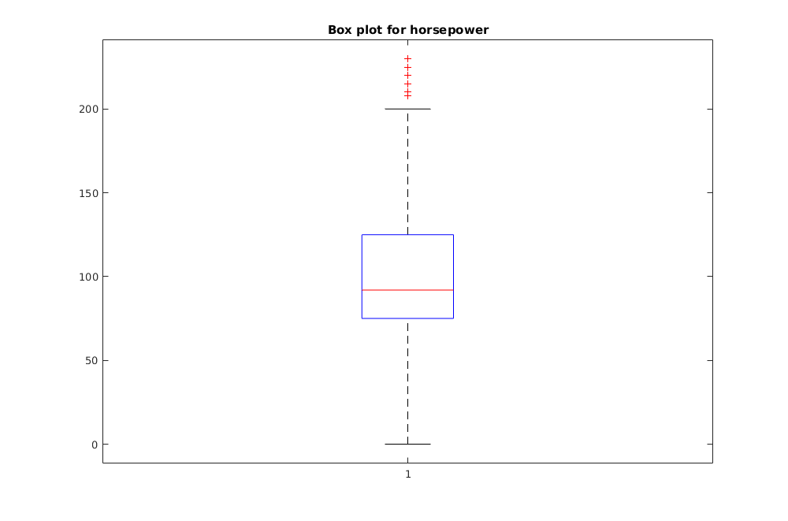

Project 1
clear clc
Question 1
Classification and regression are learning techniques to create prediction models from gathered data. The main difference between the two is their dependent variable. For classification, the dependent variables are categorical, whereas regression has numerical dependent variables. The target variable in classification is categorical and unordered. In regression, the target variable is continuous or ordered whole values. In other words, regression is used to predict continuous values, and classification is used to predict which class a data point belongs to. Regression and classification are helpful techniques to map out the process that points to a studied outcome, whether in classification or a single numerical value. Both techniques try to find a pattern in the given data set.
Question 2
Load data from the file 'adult.data.txt'.
str = fileread('adult.data.txt'); % The file is read into a string. data_hyphen = textscan(str, '%d%s%d%s%d%s%s%s%s%s%d%d%d%s%s','delimiter',','); str = regexprep(str,'-(?!\d)','nan'); % Hyphen are removed if the next charater is not a digit. data = textscan(str, '%d%s%d%s%d%s%s%s%s%s%d%d%d%s%s','delimiter',','); % The string is saved into a cell.
2.a: Variable definitions
1. Age is the age of an individual as reported by that person for the 1990 census; the value is represented in integer units of years.
2. Workclass is the category describing the current type of work the person is into; the category is further divided into sub-categories such as Private employed, self-employed, working for the government at different levels, etc.
3. Final sampling weight is the inverse of sampling fraction adjusted for non-response and over or under sampling of particular groups.
4. Educational attainment is the highest level of education that an individual has completed; it is represented in categorie such as Bachelor's degree, Master's degree, High school, etc.
5. Educational number is the number representing the educational attainment; it is represented as an integer.
6. Marital status is a person's state of being single, married, separated, divorced, or widowed.
7. Occupation is a person's usual or principle work or business as a means of earning a living.
8. Relationship is the information about the residents of each houseing unit and how they are related.
9. Race is classification of people into groups based on physical traits, genetics, etc.
10. Sex is the gender of the person; either male or female in our data.
11. Capital gain is the amount by which the property value of a person's assets has increased from the time of purchase.
12. Capital loss is the loss incurred due to decrease in the capital assets' value of the person.
13. Hours per week is the number of hours a person works in a week; it is represented as an integer unit.
14. Native country tells us the country in which the person was born in; it is a string.
15. Salary >50K or <=50K tells us if the person earns more or less than equal to 50K USD per year.
2.b: Missing data
missing_data = zeros(1,15); % Number of missing data cases. missing_data_percentage = zeros(1,15); % Percentage of the missing data. string_data = textscan(str, '%s%s%s%s%s%s%s%s%s%s%s%s%s%s%s','delimiter',',');
All the variables are saved as strings so that comparing strings to '?' will be easy.
for i = 1:15 missing_data(1,i) = sum(strncmp('?',string_data{1,i},1)); missing_data_percentage(1,i) = (missing_data(1,i)/(size(string_data{1,i},1)))*100; end
Percentage of missing data:
1. Age: 0%
2. Work class: 5.6386%
3. Final sampling weight: 0%
4. Educational attainment: 0%
5. Educational number: 0%
6. Marital status: 0%
7. Occupation: 5.6601%
8. Relationship information: 0%
9. Race: 0%
10. Sex: 0%
11. Capital gain: 0%
12. Capital loss: 0%
13. Hours per week: 0%
14. Native country: 1.7905%
15. Salary information: 0%
2.c Variable types Numeric variables: Age, Final sampling weight, Capital gain, Capital loss, Hours per week. Categorical variables: Work class, Educational attainment, Educational number, Marital status, Occupation, Relationship information, Race, Sex, Native country, salary information.
2.d Numeric data
Unique number of values of 'age':
unique_number_values_age = size(unique(data{1,1}),1);
fprintf('There are %d unique values for ''age''. \n',unique_number_values_age)
There are 73 unique values for 'age'.
Unique number of values of 'hours per week':
unique_number_values_hours = size(unique(data{1,13}),1);
fprintf('There are %d unique values for ''hours per week''. \n',unique_number_values_hours)
There are 94 unique values for 'hours per week'.
Histogram for age
h_age = histogram(data{1,1},50);
title('Histogram for age')

Histogram for work hours per week
h_hours = histogram(data{1,13},50);
title('histogram for work hours per week')
[h1,~] = histcounts(data{1,1}(strncmp('>50K',string_data{1,15},4)), 10);
[h2,edges] = histcounts(data{1,1}(strncmp('<=50K',string_data{1,15},5)), 10);
figure(1)
ctrs = edges(1)+(1:length(edges)-1).*diff(edges); % Create Centres
% bar(ctrs, [h1 ;h2]', 'stacked')
bar(ctrs, [h1 ;h2]')
legend('>50k','<=50k')
title('age')
[h1,~] = histcounts(data{1,13}(strncmp('>50K',string_data{1,15},4)), 10);
[h2,edges] = histcounts(data{1,13}(strncmp('<=50K',string_data{1,15},5)), 10);
figure(1)
ctrs = edges(1)+(1:length(edges)-1).*diff(edges); % Create Centres
% bar(ctrs, [h1 ;h2]', 'stacked')
bar(ctrs, [h1 ;h2]')
legend('>50k','<=50k')
title('hours')
h1 = data{1,1}(strncmp('>50K',string_data{1,15},4));
h2 = data{1,1}(strncmp('<=50K',string_data{1,15},5));
boxplot(double([h1; h2]), data{1,15})
title('age vs salary')
xlabel('salary class')
ylabel('age')
 h1 = data{1,13}(strncmp('>50K',string_data{1,15},4));
h2 = data{1,13}(strncmp('<=50K',string_data{1,15},5));
boxplot(double([h1; h2]), data{1,15})
title('hours vs salary')
xlabel('salary class')
ylabel('hours')
Explaining the histograms:
Histogram for age looks weird with sudden spikes. This is because the bin width is 1.46 and the first bin starts at 17 and ends at 18.46. This means that it takes the ages of 17 and 18 into account. The second bin starts at 18.46 and ends at 19.92. It takes only 18 into account. The next bin starts at 19.92 and ends at 21.38 which means it has both 20 and 21 in it. In the same way, some bins have 2 ages in them while some have only one. This led to the spikes in the first histogram.
The second histogram is simple in that most of the people work 40 hours a week which is common. We can also observe that the number of people working hours in multiples of 10 are higher compared to the surroundings.
Explaining the box plots:
The first boxplot tells us that 50 percent of the workers who earn both less than and greater than 50 thousand per annum lie between the ages of around 30 and 50. People start working as young as 17, which is when they graduate out of high school. The mean age is around 40 for both classes of salary. There are outliers where people above 80 years of age work to make a living.
The second box plot shows how many hours people work for in a week. We can see that most people work for 40 hours a week for both classes of salary which is usual. There are many outliers who work for very few hours a week and also almost a 100 hours a week.
2.e Categorical data
h_education = histogram(categorical(data_hyphen{1,4}));
title('Histogram for Educational attainment')
h_occupation = histogram(categorical(data_hyphen{1,7}));
title ('Histogram for occupation')
c1 = categorical((data_hyphen{1,4}(strncmp('<=50K',string_data{1,15},5))),unique(data_hyphen{1,4}));
c2 = categorical((data_hyphen{1,4}(strncmp('>50K',string_data{1,15},4))),unique(data_hyphen{1,4}));
[n1,categories1] = histcounts(c1);
[n2,categories2] = histcounts(c2);
figure(1)
h = bar([n1 ;n2]', 'stacked');
set(gca,'Xtick',1:1:size(unique(data_hyphen{1,4})))
set(gca, 'XTickLabel', unique(data_hyphen{1,4})')
xtickangle(60)
legend('<=50K','>50K')
title('Stacked graph for education with different salary classes')

Explaining the stacked histograms:
The first histogram tells us that most of the people have at least completed high school. Many are pursuing/pursued college education which is a positive aspect of the population.
The second histogram shows us that people have various occupations in various industries.
The last stacked graph points out the fact that the proportion of people earning more than 50K increases with increase in education level, which makes sense as more the educational qualification one has, more the salary he/her tends to earn.
2.f Pairwise analysis
age_approx = zeros(size(data{1,1},1),1);
double(age_approx);
for i = 1:(size(data{1,1},1))
age_approx(i,1) = double(data{1,1}(i,1)) + rand - 0.5;
end
FigHandle = figure;
set(FigHandle, 'Position', [0, 0, 1000, 800]);
plot(categorical(data_hyphen{1,14}),age_approx,'o')
set(gca,'Xtick',1:1:size(unique(data_hyphen{1,14})))
set(gca, 'XTickLabel', unique(data_hyphen{1,14})')
xtickangle(90)
xlabel('Country of origin')
ylabel('Age')
title('Country of origin vs Age')
The above graph shows the age of people from different countries living in the U.S. Obviously people of all ages from U.S. are currently living. Using the above data we can figure out when people from different countries migrating to the U.S.. For example, the number of Filipino americans increased after the Independence of Philippines from U.S.. People from India, China, and a few other countries started migrating to the U.S. after Immigration and Nationality Act of 1965 dramatically opened entry to the U.S. to immigrants other than traditional Northern European and Germanic groups.
FigHandle = figure; set(FigHandle, 'Position', [0, 0, 1000, 800]); plot(age_approx,(data_hyphen{1,13}),'o') xlabel('Age') ylabel('Hours working per week') title('Age vs Hours per week')
We can see from the graph that most people work a number of hours which is multiples of 10. Another observation we can make is that as people are reaching the middle age they work more. As they grow much older they tend to work less.
- Question 3*
3.a
The quantitative variables are mpg, cylinders, displacement, horsepower, weight, acceleration, and year.
The qualitative variables are origin and name. Origin is qualitative because it actually represents the location where the car has originated.
fid = fopen('Auto.csv','r'); tline = fgets(fid); variables = strsplit(tline, ','); auto_data = textscan(fid,'%d%d%d%s%d%d%d%d%s','delimiter',',', 'HeaderLines', 1); fclose(fid); str = strjoin(auto_data{1,4}); str = regexprep(str,'?(?!\d)','NaN'); data = textscan(str, '%d','delimiter',' '); auto_data{1,4} = cell2mat(data); % auto_data_table = readtable('Auto.csv');
3.b
Mean, Median, Mode, and Range for each of the quantitative variables.
double(auto_data{1,1});
double(auto_data{1,2});
double(auto_data{1,3});
double(auto_data{1,4});
double(auto_data{1,5});
double(auto_data{1,6});
double(auto_data{1,7});
double(auto_data{1,8});
[b,~,j] = unique(auto_data{1,1});
[~,k]=max(hist(j,length(b)));
mode_mpg=double(b(k));
[b,~,j] = unique(auto_data{1,2});
[~,k]=max(hist(j,length(b)));
mode_cylinders=double(b(k));
[b,~,j] = unique(auto_data{1,3});
[~,k]=max(hist(j,length(b)));
mode_disp=double(b(k));
[b,~,j] = unique(auto_data{1,4});
[~,k]=max(hist(j,length(b)));
mode_hp=double(b(k));
[b,~,j] = unique(auto_data{1,5});
[~,k]=max(hist(j,length(b)));
mode_weight=double(b(k));
[b,~,j] = unique(auto_data{1,6});
[~,k]=max(hist(j,length(b)));
mode_acc=double(b(k));
[b,~,j] = unique(auto_data{1,7});
[~,k]=max(hist(j,length(b)));
mode_year=double(b(k));
[b,i,j] = unique(auto_data{1,8});
[m,k]=max(hist(j,length(b)));
mode_origin=double(b(k));
mmmr = {'Mean'; 'Median'; 'Mode'; 'Range'};
quant = [mean(auto_data{1,1}) mean(auto_data{1,2}) mean(auto_data{1,3}) mean(auto_data{1,4}) ...
mean(auto_data{1,5}) mean(auto_data{1,6}) mean(auto_data{1,7}) mean(auto_data{1,8}); ...
double(median(auto_data{1,1})) double(median(auto_data{1,2})) double(median(auto_data{1,3})) ...
double(median(auto_data{1,4})) double(median(auto_data{1,5})) double(median(auto_data{1,6})) ...
double(median(auto_data{1,7})) double(median(auto_data{1,8})); mode_mpg mode_cylinders ...
mode_disp mode_hp mode_weight mode_acc mode_year mode_origin; double(range(auto_data{1,1})) ...
double(range(auto_data{1,2})) double(range(auto_data{1,3})) double(range(auto_data{1,4})) ...
double(range(auto_data{1,5})) double(range(auto_data{1,6})) double(range(auto_data{1,7})) ...
double(range(auto_data{1,8}))];
T = array2table(quant, 'VariableNames', {variables{1,1:8}}, 'RowNames', mmmr);
disp(T)
mpg cylinders displacement horsepower weight acceleration year origin
______ _________ ____________ __________ ______ ____________ _____ ______
Mean 23.578 5.452 193.25 103.09 2968.9 15.702 76.01 1.5758
Median 23 4 146 92 2798 16 76 1
Mode 18 4 97 150 1985 16 73 1
Range 38 5 387 230 3527 17 12 2
3.c
fprintf('1st quartile of DS is %f.\n', quantile(auto_data{1,3},0.25)) fprintf('37th percentile of DS is %f.\n', quantile(auto_data{1,3},0.37)) fprintf('37th percentile of DS is %f.\n', quantile(auto_data{1,3},0.89)) fprintf('1st quartile of HP is %f.\n', quantile(auto_data{1,4},0.25)) fprintf('37th percentile of HP is %f.\n', quantile(auto_data{1,4},0.37)) fprintf('37th percentile of HP is %f.\n', quantile(auto_data{1,4},0.89))
1st quartile of DS is 103.000000. 37th percentile of DS is 120.000000. 37th percentile of DS is 350.000000. 1st quartile of HP is 75.000000. 37th percentile of HP is 86.000000. 37th percentile of HP is 153.000000.
3.d
Five point summary of DS and HP.
mlqmuqm = {'Minimum', 'Lower Quartile', 'Median', 'Upper Quartile', 'Maximum'};
five_summary_DS = [double(min(auto_data{1,3})) quantile(double(auto_data{1,3}),[0.25,0.5,0.75]) ...
double(max(auto_data{1,3}))];
five_summary_HP = [double(min(auto_data{1,4})) quantile(double(auto_data{1,4}),[0.25,0.5,0.75]) ...
double(max(auto_data{1,4}))];
quant2 = [five_summary_DS; five_summary_HP]';
T = array2table(quant2, 'VariableNames', {'Displacement','Horsepower'}, 'RowNames', mlqmuqm);
disp(T)
Displacement Horsepower
____________ __________
Minimum 68 0
Lower Quartile 102.5 75
Median 146 92
Upper Quartile 262 125
Maximum 455 230
3.e
boxplot(double(auto_data{1,3}))
title('Box plot for displacement')
boxplot(double(auto_data{1,4}))
title('Box plot for horsepower')
 3.f hp vs mpg
scatter(auto_data{1,4},auto_data{1,1})
xlabel('Horsepower')
ylabel('Miles per gallon')
title('HP vs MPG')
weight vs acc
scatter(auto_data{1,5},auto_data{1,6},'filled')
xlabel('Weight')
ylabel('Acceleration')
title('Weight vs Acceleration')
weight vs mpg
scatter(auto_data{1,5},auto_data{1,1},'*')
xlabel('Weight')
ylabel('Miles per gallon')
title('Weight vs MPG')
We can see from the above plots that miles per gallon or the mileage decreases with increase in the weight of the car and horse power increase. This is because more the weight or more the horse power, more is the amount of fuel required. It can also be noted that acceleration decreases with increase in the weight of the car.
3.g
Miles per gallon depends on the weight, displacement, hordepower, weight, and acceleration. A relationship can be established between the mileage and the mentioned variables. Once these variables are considered, it is easy to come up with a regression model to find out the mileage of a given vehicle.
Question 4
4.a chart_m = readtable('charting-m-matches.csv'); chart_m_overview = readtable('charting-m-stats-Overview.csv'); chart_w = readtable('charting-w-matches.csv'); chart_w_overview = readtable('charting-w-stats-Overview.csv');
fid = fopen('charting-m-matches.csv','r'); tline = fgets(fid); variables_m = strsplit(tline, ','); chart_m = textscan(fid,'%s%s%s%s%s%s%d%s%s%s%s%s%s%d%d%s','delimiter',',', 'HeaderLines', 1); fclose(fid); fid = fopen('charting-m-stats-Overview.csv','r'); tline = fgets(fid); variables_m_overview = strsplit(tline, ','); chart_m_overview = textscan(fid,'%s%d%s%d%d%d%d%d%d%d%d%d%d%d%d%d%d%d%d%d','delimiter',',', 'HeaderLines', 1); fclose(fid); fid = fopen('charting-w-matches.csv','r'); tline = fgets(fid); variables_w = strsplit(tline, ','); chart_w = textscan(fid,'%s%s%s%s%s%s%d%s%s%s%s%s%s%d%d%s','delimiter',',', 'HeaderLines', 1); fclose(fid); fid = fopen('charting-w-stats-Overview.csv','r'); tline = fgets(fid); variables_w_overview = strsplit(tline, ','); chart_w_overview = textscan(fid,'%s%d%s%d%d%d%d%d%d%d%d%d%d%d%d%d%d%d%d%d','delimiter',',', 'HeaderLines', 1); fclose(fid);
[B, I] = sort(chart_m_overview{1,5},'descend');
date = chart_m_overview{1,1}(I);
player = chart_m_overview{1,2}(I);
sets = chart_m_overview{1,3}(I);
aces = chart_m_overview{1,5}(I);
x = 1;
for i = 1:size(chart_m_overview{1,1},1)
if (( (strcmp(date{i,1}(1:4),'2011')) | (strcmp(date{i,1}(1:4),'2012')) | (strcmp(date{i,1}(1:4),'2013')) | ...
(strcmp(date{i,1}(1:4),'2014')) | (strcmp(date{i,1}(1:4),'2015')) | (strcmp(date{i,1}(1:4),'2016'))) > 0)
if (( (strcmp(date{i,1}(12:18),'US_Open')) | (strcmp(date{i,1}(12:20),'Wimbledon')) + ...
(strcmp(date{i,1}(12:24),'Roland_Garros')) + (strcmp(date{i,1}(12:26),'Australian_Open'))) > 0)
if (strcmp(sets{i,1},'Total') > 0)
split = strsplit(date{i,1},'-');
if player(i,1) == 1
top(x) = split(5);
ace(x) = aces(i);
elseif player(i,1) == 2
top(x) = split(6);
ace(x) = aces(i);
end
x = x + 1;
end
end
end
end
[unique_pl, ~, ic] = unique(top,'stable');
h = histcounts(ic,size(unique_pl,2));
[Number_of_matches, I2] = sort(h, 'descend');
unique_pl = unique_pl(I2);
remove_players = find(Number_of_matches<1);
Number_of_matches(Number_of_matches<1)=[];
unique_pl = unique_pl(1:size(Number_of_matches,2));
y = 1;
for j = 1:size(unique_pl,2)
for k = 1:size(ace,2)
if (strcmp(unique_pl{1,j},top{1,k}) > 0)
ace_per_match(y) = ace(1,k);
ace_plyr(y) = string(unique_pl{1,j});
y = y + 1;
end
end
end
occurences = cumsum(Number_of_matches);
occurences = [0 occurences];
for i = 1:(size(occurences,2)-1)
ace_total_per_player(i) = sum(ace_per_match(occurences(i)+1:occurences(i+1)));
end
aces_per_match_men = (ace_total_per_player./Number_of_matches);
[top5_men_ace,I_top5_ace_men] = sort(aces_per_match_men,'descend');
top5_men_ace = top5_men_ace(1:5);
top5_men = unique_pl(I_top5_ace_men);
top5_men = top5_men(1:5);
T_men = table(categorical(top5_men'), top5_men_ace', 'VariableNames',{'Name','aces_per_match'});
disp(T_men)
Name aces_per_match
___________________ ______________
Ivo_Karlovic 29
Nick_Kyrgios 24
Samuel_Groth 22
Kenny_De_Schepper 20
Alexandr_Dolgopolov 19
[B, I] = sort(chart_w_overview{1,5},'descend');
date = chart_w_overview{1,1}(I);
player = chart_w_overview{1,2}(I);
sets = chart_w_overview{1,3}(I);
aces = chart_w_overview{1,5}(I);
x = 1;
for i = 1:size(chart_w_overview{1,1},1)
if (( (strcmp(date{i,1}(1:4),'2011')) | (strcmp(date{i,1}(1:4),'2012')) | (strcmp(date{i,1}(1:4),'2013')) | ...
(strcmp(date{i,1}(1:4),'2014')) | (strcmp(date{i,1}(1:4),'2015')) | (strcmp(date{i,1}(1:4),'2016'))) > 0)
if (( (strcmp(date{i,1}(12:18),'US_Open')) | (strcmp(date{i,1}(12:20),'Wimbledon')) + ...
(strcmp(date{i,1}(12:24),'Roland_Garros')) + (strcmp(date{i,1}(12:26),'Australian_Open'))) > 0)
if (strcmp(sets{i,1},'Total') > 0)
split = strsplit(date{i,1},'-');
if player(i,1) == 1
top(x) = split(5);
ace(x) = aces(i);
elseif player(i,1) == 2
top(x) = split(6);
ace(x) = aces(i);
end
x = x + 1;
end
end
end
end
[unique_pl, ~, ic] = unique(top,'stable');
h = histcounts(ic,size(unique_pl,2));
[Number_of_matches, I2] = sort(h, 'descend');
unique_pl = unique_pl(I2);
remove_players = find(Number_of_matches<1);
Number_of_matches(Number_of_matches<1)=[];
unique_pl = unique_pl(1:size(Number_of_matches,2));
y = 1;
for j = 1:size(unique_pl,2)
for k = 1:size(ace,2)
if (strcmp(unique_pl{1,j},top{1,k}) > 0)
ace_per_match(y) = ace(1,k);
ace_plyr(y) = string(unique_pl{1,j});
y = y + 1;
end
end
end
occurences = cumsum(Number_of_matches);
occurences = [0 occurences];
for i = 1:(size(occurences,2)-1)
ace_total_per_player(i) = sum(ace_per_match(occurences(i)+1:occurences(i+1)));
end
aces_per_match_women = (ace_total_per_player./Number_of_matches);
[top5_women_ace,I_top5_ace_women] = sort(aces_per_match_women,'descend');
top5_women_ace = top5_women_ace(1:5);
top5_women = unique_pl(I_top5_ace_women);
top5_women = top5_women(1:5);
T_women = table(categorical(top5_women'), top5_women_ace', 'VariableNames',{'Name','aces_per_match'});
disp(T_women)
Name aces_per_match
____________________ ______________
Kristyna_Pliskova 31
Nadia_Petrova 12
Mariana_Duque_Marino 10
Coco_Vandeweghe 9.25
Serena_Williams 9.0714
Top 5 men with at least 5 matches charted with the highest break points saved percentage.
date = chart_m_overview{1,1};
sets = chart_m_overview{1,3};
% player = chart_m_overview{1,2}(I);
x = 1;
for i = 1:size(chart_m_overview{1,1},1)
if (( (strcmp(date{i,1}(1:4),'2015')) ) > 0)
if (strcmp(sets{i,1},'Total') > 0)
split = strsplit(date{i,1},'-');
player1(2*x-1) = split(5);
player1(2*x) = split(6);
bkpt(x) = double(chart_m_overview{1,11}(i,1));
bkpt_sv(x) = double(chart_m_overview{1,12}(i,1));
x = x + 1;
end
end
end
bkpt_sv_pct = double(bkpt_sv)./double(bkpt);
bkpt_sv_pct(isnan(bkpt_sv_pct))=0;
[bkpt_sv_pct_sort, I] = sort(bkpt_sv_pct,'descend');
bkpt = bkpt(I);
bkpt_sv = bkpt_sv(I);
player1 = player1(I);
[unique_player1, ~, ic] = unique(player1,'stable');
h = histcounts(ic,size(unique_player1,2));
[H, I2] = sort(h, 'descend');
unique_pl = unique_player1(I2);
remove_players = find(H<6);
H(H<6)=[];
unique_pl = unique_pl(1:size(H,2));
h2 = h(1:size(H,2));
y = 1;
for j = 1:size(unique_pl,2)
for k = 1:size(bkpt,2)
if (strcmp(unique_pl{1,j},player1{1,k}) > 0)
bkpt_sort(y) = bkpt(1,k);
bkpt_sv_sort(y) = bkpt_sv(1,k);
plyr(y) = string(unique_pl{1,j});
y = y + 1;
end
end
end
occurences = cumsum(H);
occurences = [0 occurences];
for i = 1:(size(occurences,2)-1) bkpt_total_per_player(i) = sum(bkpt_sort(occurences(i)+1:occurences(i+1))); bkpt_sv_total_per_player(i) = sum(bkpt_sv_sort(occurences(i)+1:occurences(i+1))); end bkpt_sv_pct_final = (bkpt_sv_total_per_player./bkpt_total_per_player); [top5_men_bkpt,I_top5_bkpt_men] = sort(bkpt_sv_pct_final,'descend'); top5_men_bkpt = top5_men_bkpt(1:5); top5_men = unique_pl(I_top5_bkpt_men); top5_men = top5_men(1:5); top5_pct = top5_men_bkpt.*100; T_men = table(categorical(top5_men'), top5_pct', 'VariableNames',{'Name','breakpoints_percentage'}); disp(T_men)
Name breakpoints_percentage
___________________ ______________________
Pablo_Carreno_Busta 73.529
Adrian_Mannarino 71.739
Denis_Istomin 68.182
Ivo_Karlovic 67.568
Rafael_Nadal 66.495
Top 5 women with at least 5 matches charted with the highest break points saved percentage.
datew = chart_w_overview{1,1};
setsw = chart_w_overview{1,3};
% player = chart_w_overview{1,2}(I);
x = 1;
for i = 1:size(chart_w_overview{1,1},1)
if (( (strcmp(datew{i,1}(1:4),'2015')) ) > 0)
if (strcmp(setsw{i,1},'Total') > 0)
split = strsplit(datew{i,1},'-');
player1w(2*x-1) = split(5);
player1w(2*x) = split(6);
bkptw(x) = double(chart_w_overview{1,11}(i,1));
bkpt_svw(x) = double(chart_w_overview{1,12}(i,1));
x = x + 1;
end
end
end
bkpt_sv_pctw = double(bkpt_svw)./double(bkptw);
bkpt_sv_pctw(isnan(bkpt_sv_pctw))=0;
[bkpt_sv_pct_sortw, Iw] = sort(bkpt_sv_pctw,'descend');
bkptw = bkptw(Iw);
bkpt_svw = bkpt_svw(Iw);
player1w = player1w(Iw);
[unique_player1w, ~, icw] = unique(player1w,'stable');
hw = histcounts(icw,size(unique_player1w,2));
[Hw, I2w] = sort(hw, 'descend');
unique_plw = unique_player1w(I2w);
remove_playersw = find(Hw<6);
Hw(Hw<6)=[];
unique_plw = unique_plw(1:size(Hw,2));
h2w = hw(1:size(Hw,2));
y = 1;
for j = 1:size(unique_plw,2)
for k = 1:size(bkptw,2)
if (strcmp(unique_plw{1,j},player1w{1,k}) > 0)
bkpt_sortw(y) = bkptw(1,k);
bkpt_sv_sortw(y) = bkpt_svw(1,k);
plyrw(y) = string(unique_plw{1,j});
y = y + 1;
end
end
end
occurencesw = cumsum(Hw);
occurencesw = [0 occurencesw];
for i = 1:(size(occurencesw,2)-1) bkpt_total_per_playerw(i) = sum(bkpt_sortw(occurencesw(i)+1:occurencesw(i+1))); bkpt_sv_total_per_playerw(i) = sum(bkpt_sv_sortw(occurencesw(i)+1:occurencesw(i+1))); end bkpt_sv_pct_finalw = (bkpt_sv_total_per_playerw./bkpt_total_per_playerw); [top5_men_bkptw,I_top5_bkpt_menw] = sort(bkpt_sv_pct_finalw,'descend'); top5_men_bkptw = top5_men_bkptw(1:5); top5_menw = unique_plw(I_top5_bkpt_menw); top5_menw = top5_menw(1:5); top5_pctw = top5_men_bkptw.*100; T_menw = table(categorical(top5_menw'), top5_pctw', 'VariableNames',{'Name','breakpoints_percentage'}); disp(T_menw)
Name breakpoints_percentage
__________________________ ______________________
Irina_Camelia_Begu 67.949
Barbora_Zahlavova_Strycova 64.062
Heather_Watson 62.5
Samantha_Stosur 61.111
Karolina_Pliskova 58.824
4.b (Bonus)
date = chart_w_overview{1,1};
sets = chart_w_overview{1,3};
% player = chart_w_overview{1,2}(I);
x = 1;
for i = 1:size(chart_w_overview{1,1},1)
if (( (strcmp(date{i,1}(1:4),'2015')) ) > 0)
if (strcmp(sets{i,1},'Total') > 0)
split = strsplit(date{i,1},'-');
player1(2*x-1) = split(5);
player1(2*x) = split(6);
bkpt(x) = double(chart_w_overview{1,11}(i,1));
bkpt_sv(x) = double(chart_w_overview{1,12}(i,1));
x = x + 1;
end
end
end
bkpt_sv_pct = double(bkpt_sv)./double(bkpt);
bkpt_sv_pct(isnan(bkpt_sv_pct))=0;
[bkpt_sv_pct_sort, I] = sort(bkpt_sv_pct,'descend');
player1 = player1(I);
[unique_player1, ia, ic] = unique(player1,'stable');
h = histcounts(ic,size(unique_player1,2));
[H, I2] = sort(h, 'descend');
unique_pl = unique_player1(I2);
remove_players = find(H<6);
H(H<6)=[];
unique_pl = unique_pl(1:size(H,2));
h2 = h(1:size(H,2));
y = 1;
for j = 1:size(unique_pl,2)
for k = 1:size(bkpt_sv_pct,2)
if (strcmp(unique_pl{1,j},player1{1,k}) > 0)
pct(y) = bkpt_sv_pct_sort(1,k);
plyr(y) = string(unique_pl{1,j});
y = y + 1;
end
end
end
occurences = cumsum(H);
occurences = [0 occurences];
x = 1;
for l = 1:(size(occurences,2)-1)
ind = find(pct==pct(occurences(l)+1),5);
if isequal(ind,[1 2 3 4 5]) > 0
top5_women2(x) = unique_pl(l);
top5_pctw2(x) = pct(occurences(l)+1);
x = x + 1;
end
end
x1 = 1:1:occurences(2);
x2 = 1:(length(H(1)+1:H(1)+H(2)));
x3 = 1:length(H(1)+H(2)+1:H(1)+H(2)+H(3));
x4 = 1:length(occurences(end-3)+1:occurences(end-2));
x5 = 1:length(occurences(end-2)+1:occurences(end-1));
x6 = 1:length(occurences(end-1)+1:occurences(end));
plot(x1, pct(1:H(1))*100)
hold on
plot(x2, pct(H(1)+1:H(1)+H(2))*100)
hold on
plot(x3, pct(H(1)+H(2)+1:H(1)+H(2)+H(3))*100)
hold on
plot(x4, pct(occurences(end-3)+1:occurences(end-2))*100)
hold on
plot(x5, pct(occurences(end-2)+1:occurences(end-1))*100)
hold on
plot(x6, pct(occurences(end-1)+1:occurences(end))*100)
hold on
top5_women2 = strrep(top5_women2, '_', ' ');
lgd = [top5_women2(1:3), top5_women2(end-2:end)];
legend(lgd)
The above plot compares the break points saved percentage of the top 3 and the bottom 3 women who have played at least 5 matches.